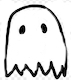

my name is corinne mulvey. i recently graduated Harvard with a math degree. i intened to study math, but after my first year, i decided i would absolutely not study math. despite my best efforts, i did indeed study math.
I speak inconsistently fluent german, consistently not fluent russian, and regrettably bad but sometimes passable spanish. I do not speak these lanugages for a reason.
in my free time, i like bikes, looking at trees, and going to new places on my bike to look at trees. in fact, i'm probably doing this right now.
